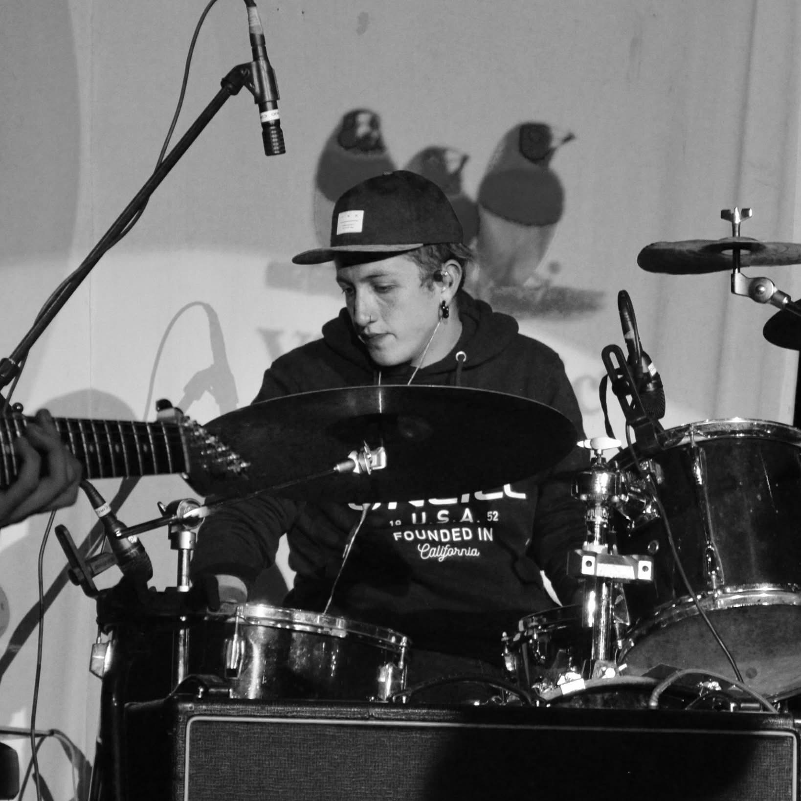
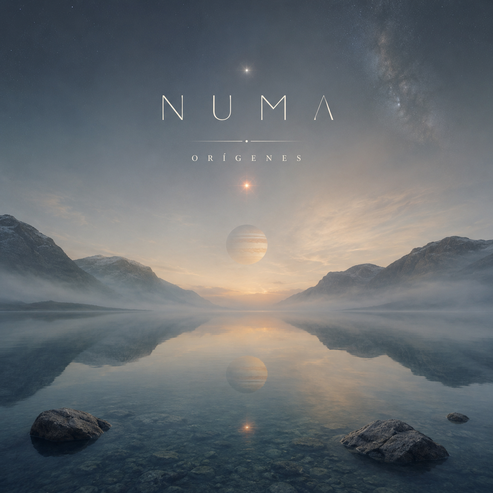
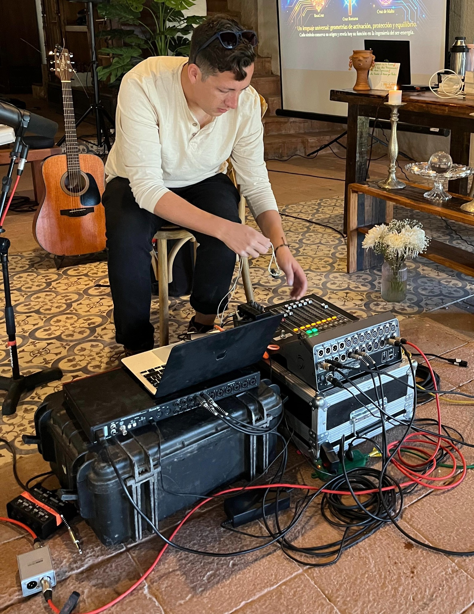

Emily Lagos · Olvídalo
Compositor · Arreglista · Productor
Proyecto de Emily Lagos en el que participé como compositor, arreglista y productor.
Abrir en YouTube →

Proyecto de Emily Lagos en el que participé como compositor, arreglista y productor.
Captura y postproducción de audio para interpretación en vivo.
Trabajo de interpretación y ejecución musical en batería.
Producciones, sesiones y material audiovisual.
Ver canal de YouTube →Explora el canal para conocer otros trabajos y colaboraciones.

NUMA es mi proyecto musical personal. Orígenes reúne parte de ese universo sonoro, donde composición, producción y exploración conviven con mayor libertad. ARIES forma parte de este proyecto.
Una guía práctica para entender qué necesitas realmente, invertir mejor y crear un espacio de trabajo funcional sin perderte entre equipos y especificaciones.

Soy Bastián Thompson. Trabajo entre la música, el audio y la producción, acompañando proyectos desde la idea inicial hasta una solución técnica concreta.
Mi enfoque combina producción musical, experiencia práctica en sonido y una forma de trabajo orientada a que artistas y creadores entiendan mejor sus decisiones y construyan proyectos con identidad.
Uno de los aspectos que más valoro de trabajar con Bastián es su calidad humana y profesional. Genera un ambiente muy grato, con comunicación, respeto por las ideas y una preocupación real por que cada proyecto alcance su mejor resultado. Técnicamente demuestra criterio, precisión y una gran capacidad para comprender las necesidades de cada proyecto, combinando solvencia técnica con sensibilidad artística.
Bastián ha sido parte importante de mi proceso como artista. Hemos trabajado varias canciones juntos y ha sido bacán compartir este camino con él. Además de ser un tremendo músico, productor y letrista, tiene una paciencia enorme y siempre está ayudándome a sacar lo mejor de cada canción y también de mí como cantante. Siempre escucha mis ideas, incluso las más locas, y busca la manera de llevarlas a un buen resultado.
Compartimos un proyecto musical durante aproximadamente seis años y Bastián fue una persona muy importante en mi camino como cantante. Siempre me impulsó a atreverme y confiar más en mis capacidades. Es muy atento a los detalles y le importa profundamente que las cosas se hagan bien. Trabajar con él no solo significó compartir música, sino también crecer como artista y como persona, y encontrar más confianza en mi propia voz.
He tenido el privilegio de trabajar con Bastián en varios proyectos y, sin duda, es uno de los mejores productores musicales que conozco. Más allá de su criterio técnico, destaco especialmente su sensibilidad y capacidad creativa. Tiene ese talento poco común de comprender una idea que todavía existe solo en tu cabeza y transformarla en un sonido con identidad, carácter y magia propia, incluso llevándola mucho más lejos de lo que originalmente imaginabas.
Si buscas un profesional cercano y talentoso, que no te deje solo durante el proceso, recomiendo plenamente a Bastián. Tiene la capacidad de guiarte, ordenar el caos, optimizar los tiempos y acompañar el proyecto hasta conseguir un resultado de primer nivel.